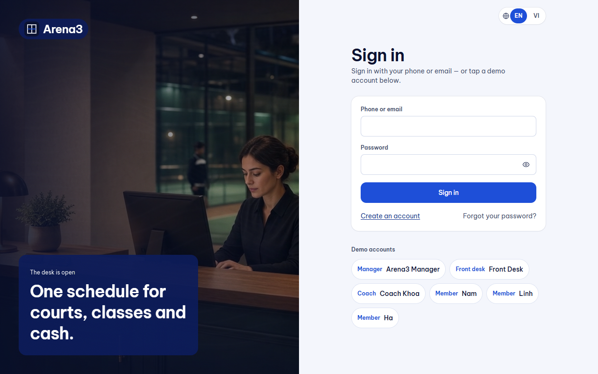
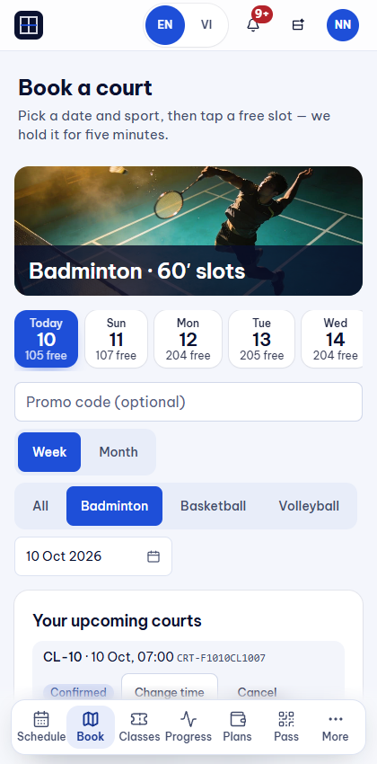
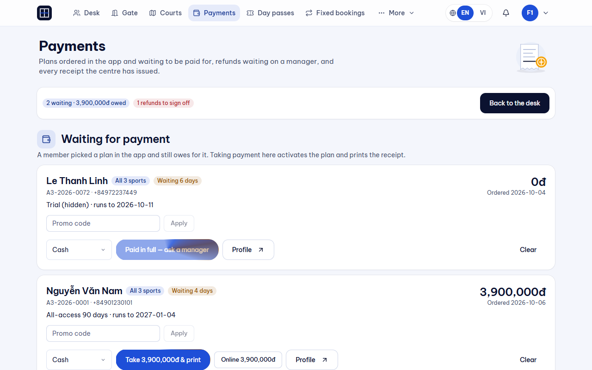
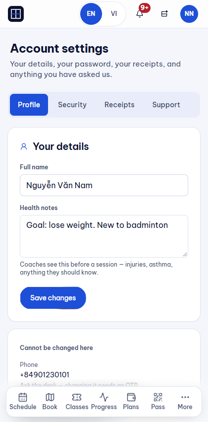
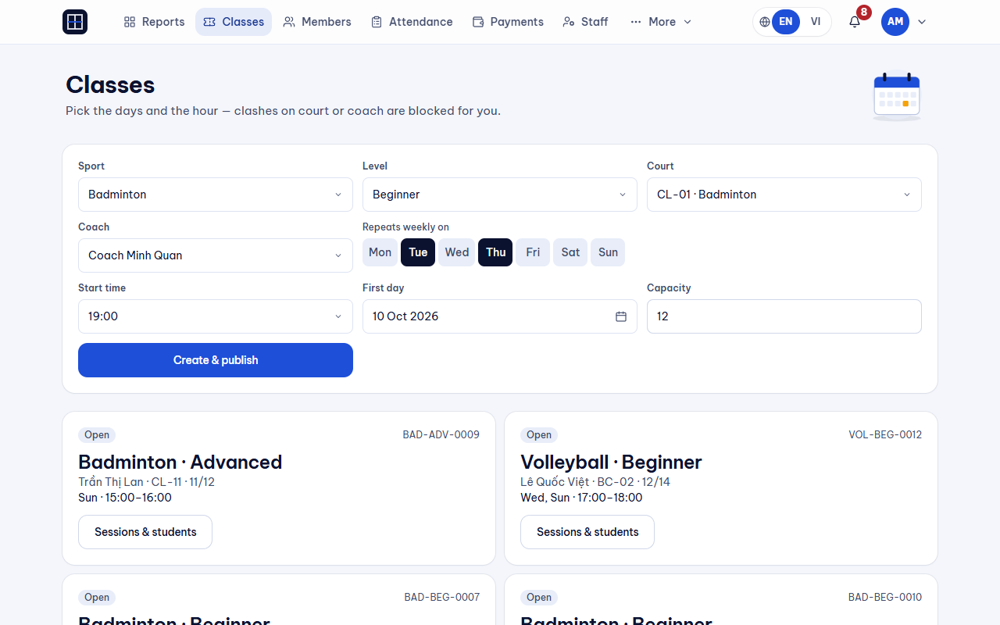
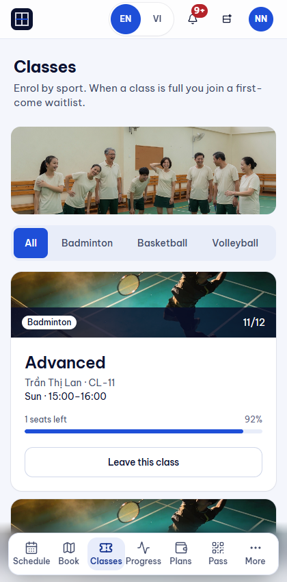
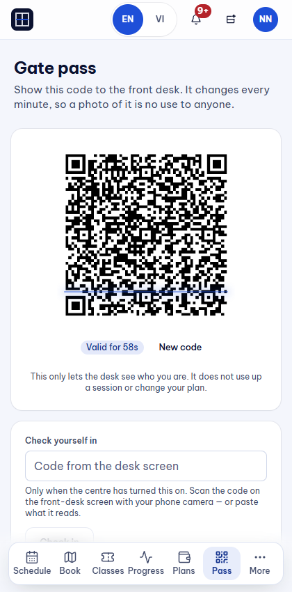
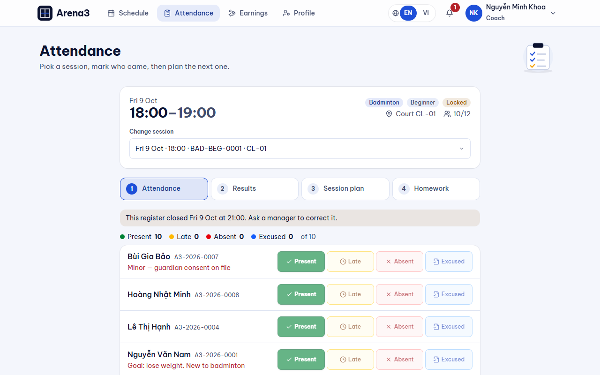
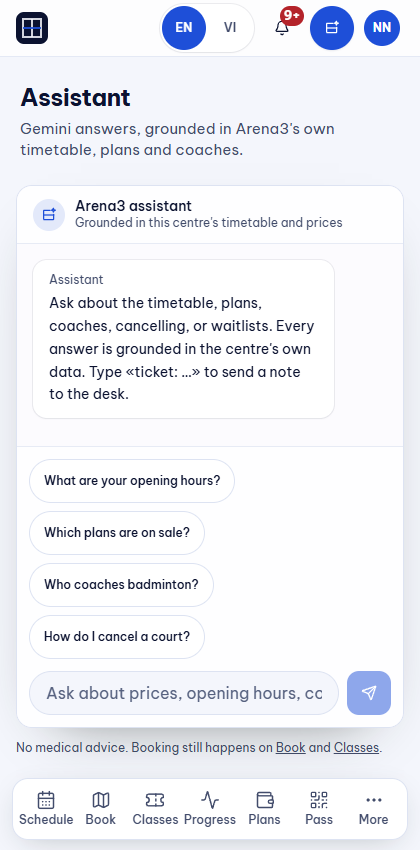
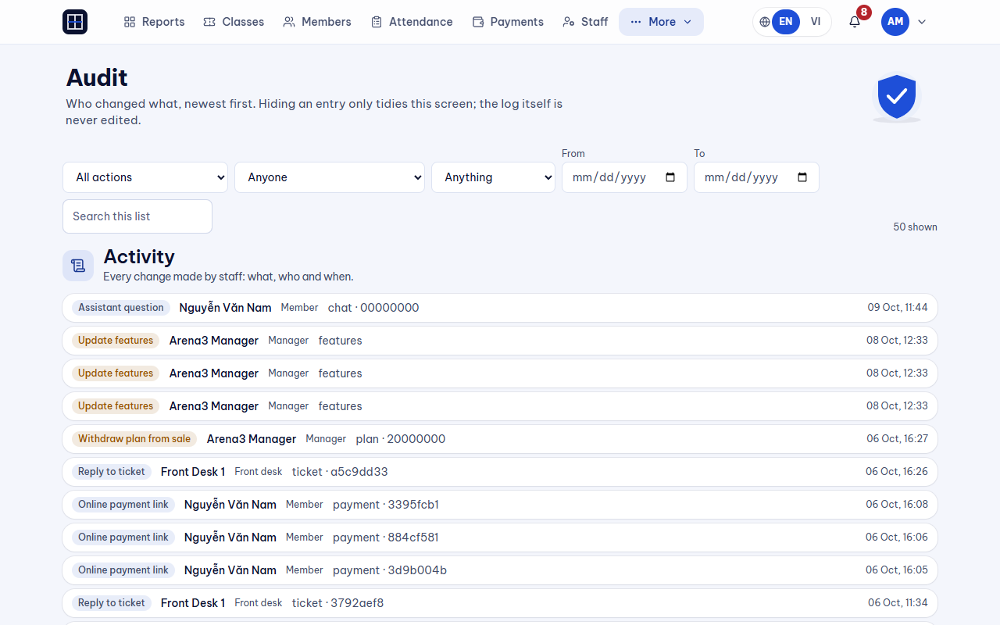

Tài liệu hướng dẫn thao tác từng bước (Click-by-click), ảnh chụp màn hình thực tế, chú thích kiến trúc chuyên sâu và câu thoại thuyết trình chuẩn cho buổi nghiệm thu hội đồng.
| Thành viên | Vai trò | Phân hệ nắm giữ | Ranh giới dữ liệu & Trách nhiệm |
|---|---|---|---|
| 1. Hiếu (Trưởng nhóm) | Hạng 1 | F1 (Cổng vào, phân quyền, gói) F7 (Lịch chiếm sân, giữ chỗ) |
Quản lý tài khoản, token SHA-256, bảng occupancies, khóa chống bán trùng FOR UPDATE. Không tự thu tiền, không điểm danh. |
| 2. Sử | Hạng 2 | F3 (Tiền tệ, ca thu ngân, hóa đơn, báo cáo) | Chủ sở hữu duy nhất của sổ cái payments, hóa đơn PDF tiếng Việt, đối soát chuyển khoản, payOS QR. Không tự cấp sân. |
| 3. Toàn | Hạng 3 | F2 (Lớp học, lịch lặp, ghi danh, danh sách chờ) | Tạo lớp, job sinh buổi học rrule, kiểm tra trùng sân qua Hiếu, xử lý hàng đợi Waitlist tự động. Không sửa điểm danh. |
| 4. Tân | Hạng 4 | F4 (Điểm danh, cổng QR, at-risk) F5 (Gợi ý bài tập AI) |
Quét cổng gate_visits (tách biệt điểm danh), khóa sổ điểm danh sau 2h (BR-53), nút gợi ý bài tập AI tích hợp trong giáo án. |
| 5. Phúc | Hạng 5 | F6 (Trợ lý AI & Quản lý Ticket hỗ trợ) | Chatbot có System Guardrails: tra cứu cá nhân, từ chối giao dịch tiền và tư vấn y tế. Chuyển tiếp câu hỏi khó thành Ticket quầy. |
| Vai trò | Số điện thoại | Mật khẩu | URL mặc định | Mục đích sử dụng trong kịch bản |
|---|---|---|---|---|
| Quản lý | 0900000001 | ChangeMe!a3 | /manager | Quản trị nhân sự, giá, lớp học, báo cáo, audit log. |
| Lễ tân | 0900000002 | ChangeMe!a3 | /desk | Mở ca, thu tiền mặt, đối soát chuyển khoản, quét cổng, ticket. |
| HLV Khoa | 0901110011 | ChangeMe!a3 | /coach | Xem lịch dạy, mở sổ điểm danh lớp, soạn giáo án duyệt bài tập. |
| Hội viên Nam | 0901230101 | ChangeMe!a3 | /app | Máy 1: Giữ chỗ Sân H, mua gói, ghi danh lớp, mã QR cổng, chat bot. |
| Hội viên Linh | 0901230102 | ChangeMe!a3 | /app | Máy 2 (Ẩn danh): Cùng bấm giữ Sân H để chứng minh chống bán trùng. |

Thao tác: Mở /login, lần lượt bấm các thẻ demo: Quản lý, Lễ tân, HLV, Hội viên.
homeFor(role) điều hướng về đúng không gian làm việc độc lập. Các URL trái quyền bị chặn triệt để tại Server qua middleware requireRole."
Phải thấy: Mỗi tài khoản mở đúng trang chủ riêng biệt (`/manager`, `/desk`, `/coach`, `/app`).

Chuẩn bị: Mở 2 cửa sổ song song (Nam Chrome thường và Linh ẩn danh). Cùng chọn Sân H lúc 19:00 ngày mai.
Thao tác: Nam bấm "Giữ chỗ" trước 1 giây. Ngay lập tức bên Linh bấm "Giữ chỗ" vào chính ô đó.
SELECT ... FOR UPDATE khóa dòng sân và tạo bản ghi vào occupancies. Linh bấm ngay sau đó gặp xung đột và bị trigger CONFLICT_SLOT từ chối tức thì. Sân H thuộc về Nam trong 5 phút."


Thao tác từng click:
/desk mở ca làm việc (nhập tiền đầu ca 500.000đ). Nếu ca đóng mà thu tiền sẽ bị chặn ngay./desk/payments, chọn khoản giữ chỗ Sân H của Nam, chọn phương thức "Tiền mặt", bấm "Xác nhận thanh toán"./account -> Tab "Biên lai", bấm mở hóa đơn PDF tiếng Việt vừa phát hành.settleHeldBooking được thực thi trong một transaction duy nhất: tạo phiếu thu `posted`, chuyển sân sang `confirmed`, và cấp hóa đơn PDF. Cơ chế withIdempotency đảm bảo dù có bấm nhầm nhiều lần cũng không bao giờ sinh 2 phiếu thu."


Thao tác từng click:
/manager/classes, tạo lớp mới nhưng cố tình chọn Sân H lúc 19:00 ngày mai (giờ Nam vừa mua) -> Bấm "Xuất bản" -> Phải thấy: Bị từ chối ngay lập tức: "Sân đã có người đặt trong khung giờ này"./app/classes thấy lớp mới mở, bấm "Ghi danh" -> Sĩ số lớp tăng từ 0 lên 1/2.inviteWaitlist, ngăn chặn người ngoài chen ngang.


Thao tác từng click:
/app/pass trên điện thoại, đưa mã QR TOTP xoay 60 giây cho lễ tân quét tại /desk/gate.gate_visits)./coach/attendance kiểm tra buổi học -> Trạng thái của Nam vẫn là Chưa điểm danh./app/train.

Thao tác:
/desk phản hồi và đóng ticket -> Nam nhận thông báo đẩy.
Thao tác: Đăng nhập Quản lý, mở /manager/audit.
| Người trả lời & Câu hỏi | Câu trả lời chuẩn kỹ thuật để ghi điểm tuyệt đối |
|---|---|
| Hiếu (F1/F7) "Tại sao không lưu thẳng vào bảng `court_bookings` mà phải tạo bảng trung gian `occupancies`?" |
"Dạ thưa thầy, thực tế có 4 thực thể cùng chiếm dụng mặt sân: Đặt sân lẻ, Lớp học định kỳ, Lịch bảo trì, và Giữ chỗ chờ thanh toán. Nếu mỗi thực thể lưu một bảng riêng thì truy vấn kiểm tra sân trống phải JOIN 4 bảng, rất chậm và dễ lọt lịch khi mở rộng tính năng. Bằng cách gom về bảng `occupancies`, kiểm tra sân trống chỉ là một câu lệnh SELECT duy nhất, đảm bảo tính toàn vẹn tuyệt đối." |
| Sử (F3) "Tại sao khi khách chuyển khoản, em không tạo dòng payment với trạng thái `pending`?" |
"Dạ, nguyên tắc kế toán là tiền chưa về tài khoản thì chưa phải tài sản. Nếu tạo dòng pending trong `payments`, các báo cáo doanh thu và công nợ sẽ rất dễ bị tính nhầm nếu lập trình viên quên mệnh đề `WHERE status = 'posted'`. Vì vậy hệ thống coi chuyển khoản chỉ là một 'lời hứa' gắn trên booking. Bảng `payments` là sổ cái sạch, chỉ ghi nhận tiền thật đã xác minh." |
| Toàn (F2) "Làm thế nào để hệ thống sinh lịch học cả tháng mà không bị lag máy chủ?" |
"Dạ, hệ thống dùng chuẩn lặp `rrule` kết hợp background job `generateSessions`. Khi xuất bản lớp, hệ thống chỉ sinh lịch trước 4 tuần. Định kỳ hàng tuần job scheduler sẽ tự động quét sinh tiếp các tuần kế tiếp, giúp tải máy chủ phân bổ đều và dữ liệu luôn nhẹ nhàng." |
| Tân (F4) "Tại sao lại phải khóa sổ điểm danh sau 2 tiếng mà không cho HLV tự do sửa?" |
"Dạ, dữ liệu điểm danh liên quan trực tiếp đến trừ buổi tập của khách và tính hoa hồng cho HLV. Nếu cho sửa hồi tố tự do sẽ dễ phát sinh gian lận điểm danh khống để lấy hoa hồng. Vì vậy sau 2 giờ hệ thống tự động khóa (BR-53), chỉ Quản lý mới có quyền sửa kèm lý do bắt buộc và ghi audit log." |
| Phúc (F6) "Làm sao chống Prompt Injection khi người dùng cố lừa bot thao túng dữ liệu?" |
"Dạ, backend của bot hoàn toàn không được cấp các function calling nguy hiểm như `createPayment` hay `cancelBooking`. Dù bot có bị lừa câu chữ thì cũng không có công cụ phần mềm nào để thao túng database." |
| Sự cố phát sinh | Hành động xử lý ngay tại chỗ (Trong 10 giây) |
|---|---|
| Bấm giữ sân bị báo lỗi | Bình tĩnh nói: "Khung giờ này vừa có khách đặt trước, em xin phép chọn sang khung giờ kế tiếp ngay bên cạnh" và click sang ô khác. |
| Hết hạn giữ chỗ 5 phút trước khi trả tiền | Tải lại trang, bấm giữ lại ô đó trong 3 giây và tiếp tục bấm thanh toán ngay. |
| Nút gợi ý AI quay vòng tròn quá lâu | Hệ thống tự động kích hoạt Fallback nội bộ lấy bài tập mẫu sau timeout. HLV tiếp tục thao tác duyệt bài bình thường. |
| Quên mật khẩu tài khoản demo | Bấm trực tiếp vào các thẻ tài khoản demo có sẵn ở cuối trang đăng nhập để tự động điền thông tin. |